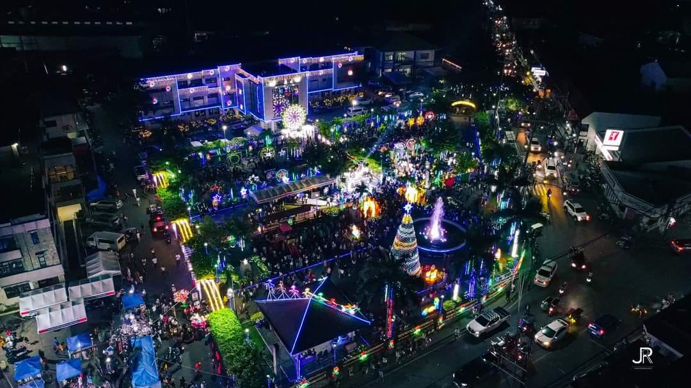

Welcome to Sta. Maria, Bulacan! We're thrilled to have you join us on this exciting journey through the
flavors, aromas, and stories that make our town a gastronomic haven.
Sta. Maria, Bulacan, is a town in the Philippines known for its rich cultural heritage and vibrant
culinary scene. Nestled in the heart of Central Luzon, Sta. Maria boasts a diverse array of dishes that
reflect the fusion of traditional Filipino flavors with unique local influences. Let's delve deeper into
the culinary delights that make Sta. Maria a must-visit destination for food enthusiasts and explorers.

Sta. Maria takes pride in its deep-rooted history, tracing back to the Spanish colonial era. The town's
historic structures, such as the Barasoain Church and Casa Tribunal, serve as living testaments to its
enduring past. Walking through the streets, you'll find echoes of bygone eras, preserving the charm of a
town that has gracefully evolved over time.
Tangible cultural heritage in the municipality includes religious attractions such as Immaculada Concepcion Parish Church and Bahay ng Poon in Barangay Poblacion and Our Lady of Holy Eucharist and Grace in Barangay San Vicente.
Intangible culture includes fiestas and festivals. Santa Maria Town Fiesta, the mother of all fiestas in the municipality, is celebrated on the first Thursday after the 2nd day of February. This month-long celebration features various cultural and religious events in honor of their Patroness, La Purisima Concepcion.
© 2023 Patikim ni Sta.Maria. All rights reserved.